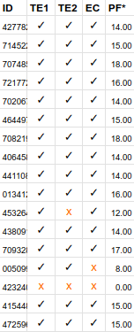

El curso tiene como objetivo identificar/aplicar los conceptos, algoritmos y técnicas relacionados a la visión computacional. Además, explorar los fundamentos del processamiento de imagenes. También, explorar los conceptos y técnicas del reconocimiento de patrones. El curso propone brindar teoría y práctica con el fin de que los estudiantes puedan aplicar los conceptos y herramientas computacionales estudiadas en problemas reales.
PC1:
[
Notebook-PC01 (version 4) ]
Histogram, median filter and thresholding segmentation.
PC2:
[
Notebook-PC02 (version 2) ]
Morphological transformations.
PC3:
[
Notebook-PC03 (version 7) ]
Segmentation by superpixels.
PC4:
[
Notebook-PC04 (version 3) ]
Supepixels, train, test and dice metric.
PC5:
[
Notebook-PC05 (version 2) ]
Redefined burnded forest dataset.
PC6:
[
Notebook-PC06 (version 1) ]
Semantic segmentation based on Unet architecture.
Importante: para el desarrollo de los trabajos es posible
formar grupos de hasta 2 integrantes. No obstante, se recomienda
desarrollar el trabajo de forma individual, puesto que la evaluación
final será realizada individualmente.
TE1: [
Description ]
Binary segmentation, thresholding and median filter.
TE2: [
Description ]
Semantic segmentation using superpixel.
PF = (TE + EC)/2
donde: PF: promedio final TE: promedio de trabajos encargados parciales EC: evaluación de conocimientos (trabajo encargado final, incluye exposición) Promedios finales:

ID: 5 primeros digitos del DNI; PF*: promedio final redondeado.
Actualizado: 27/10/2024
[1] Rafael C. Gonzalez, Richard Eugene Woods. Digital Image Processing. 4Th Edition. Pearson (2018).
[PDF]
[2] François Chollet. Deep Learning with Python. Second Edition. 4Th Edition. Pearson (2021).
[PDF]
[3] H. Singh. Practical Machine Learning and Image Processing: For Facial Recognition, Object Detection, and Pattern Recognition Using Python. 01 2019.
[PDF]
[4] A. Rosebrock. Deep Learning for Computer Vision with Python: Starter Bundle. PyImageSearch, 2017.
[PDF]
[5] S. Kapur. Computer Vision with Python 3. Packt Publishing, 2017.
[PDF]
[6] Howse, P. Joshi, and M. Beyeler. OpenCV: Computer Vision Projects with Python. Learning path. Packt Publishing,
2016.
[PDF]
[7] https://doi.org/10.1109/ICET.2018.8603608
[8] https://doi.org/10.1109/ACCESS.2019.2961125 [9] https://doi.org/10.1049/ipr2.12242 [10] https://doi.org/10.1109/SIBGRAPI51738.2020.00034 [11] https://doi.org/10.1109/ICIP.2010.5653963 [12] https://doi.org/10.1109/TPAMI.2012.120 [13] https://doi.org/10.1109/CVPR.2017.520 [14] https://doi.org/10.1007/s10462-020-09924-4 [15] https://doi.org/10.3390/rs12101667 [16] https://doi.org/10.1016/j.neunet.2023.11.006 [17] https://doi.org/10.1038/s41598-020-62484-z [18] https://doi.org/10.1109/TMI.2021.3091207 [19] http://dx.doi.org/10.1109/TENCON50793.2020.9293750 [20] https://doi.org/10.1016/j.compag.2016.07.003 [21] https://doi.org/10.3390/s19214711
ivargasbelizario at gmail dot com |
||||